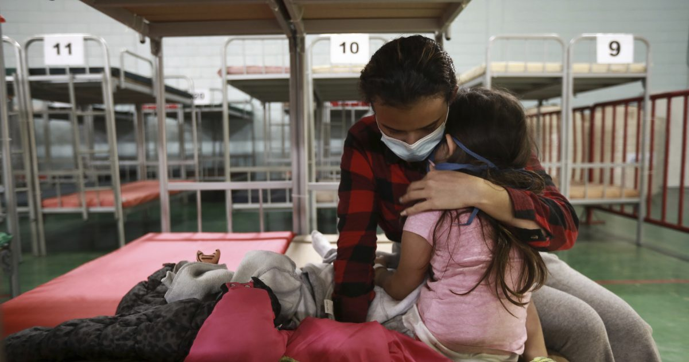
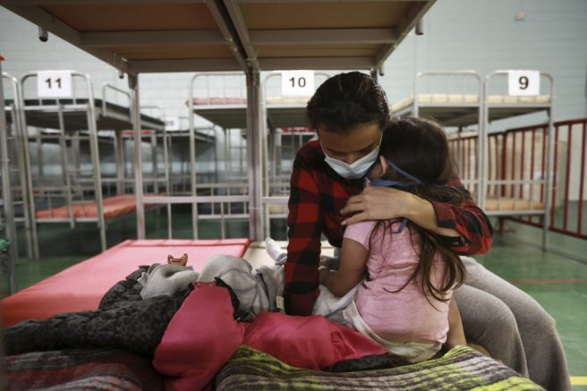

Mexico opens shelters to house deported migrants
OAN Newsroom
Authorities in Mexico repurpose a gym in response to increased numbers of migrants being deported from the U.S.The growing number of illegal immigrants denied entry to the U.S. has forced officials in a city on the Rio Grande to find new places to house them as other shelters have reached maximum capacity.
It’s more than a crisis at the southern border.It’s chaos.— Rep.Jim Jordan (@Jim_Jordan) April 7, 2021
The gym is meant to be a temporary shelter capable of holding 400 people.
'The situation has already overwhelmed us in terms of shelters, we must have a dignified place to receive them,' said Rogelio Pinal, a human rights officer in Ciudad Juarez.'To protect families who are on the streets, especially mothers with children.'
It’s been 10 days since Kamala Harris was named Biden’s so-called crisis manager, and she still hasn’t visited the border.— Ronna McDaniel (@GOPChairwoman) April 4, 2021
While children traveling alone are permitted to remain in U.S. facilities to seek asylum, nearly all single adults are expelled to Mexico.The circumstances have resulted in many families self-separating in Mexico to increase the chances of their children getting to stay in the U.S.
Posted On: 2021-04-06T00:00:00


Content Date: 2021-04-06
Download Date: 2021-04-16
Document ID: L0C049XJP